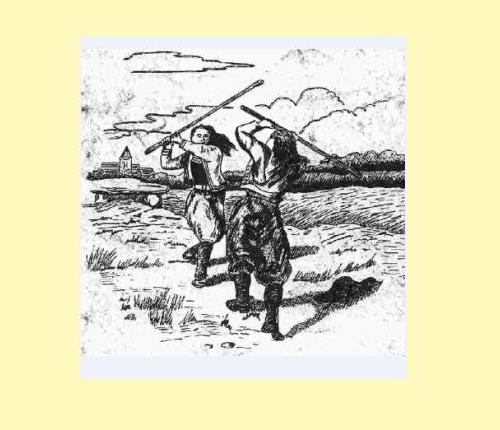

ANNA AR GARDIEN
ANNE LE GARDIEN
Textes recueillis par - Texts collected by:
1° Théodore Hersart de La Villemarqué (Carnet de Keransquer N°1, pp. 1 - 4)
2° François-Marie Luzel (publ. in "Gwerzioù Breiz Izel II", pp. 448 - 458, 1874)

Duel au "penn-bazh"
tiré du site "la-rose-couverte.over-blog.com/pages/Le_Penn_Baz-1670395.html
*
Mélodie 1 * Mélodie 2
Arrangement Christian Souchon (c) 2013
Déplacer le curseur (ou le doigt si écran tactile) sur l'espace ci-dessus pour afficher des partitions
Move cursor (or finger in case of touch screen) about surface above to display sheet music
|
A propos de la mélodie La Villemarqué n'a noté aucune mélodie dans ses carnets d'enquête. Lorsque le même chant a été noté par un autre collecteur et que l'on connaît par ailleurs l'air qui l'accompagne on peut associer à coup sûr ce dernier au texte du carnet. C'est ainsi qu'une version de ce texte existe dans les "Gwerziou" de Luzel (chant n°2 sur la présente page). A la plupart des "gwerzioù" et des "sonioù" recueillis par Luzel, correspond un air (ou plusieurs quelquefois) noté par le musicologue Maurice Duhamel dans un recueil intitulé "Gwerzioù ha Sonioù Breiz-Izel - Musiques Bretonnes", préfacé par Anatole Le Braz et publié à Paris en 1913. En l'occurrence, ce précieux ouvrage donne deux versions trégoroises: Bibliographie Ce chant existe: - Sous forme manuscrite, . dans la collection de Penguern, tome 89, sous le titre "Ar Gardien koz" (noté à Taulé en 1851, publié dans la revue "Gwerin 5"). . parmi les manuscrits Luzel, Nouvelles acquisitions françaises de la Bibliothèque nationale, 3342, 373: "Annaik Le Gardien" (Plouaret) (trad.) - Sous forme imprimée, . dans le recueil "Gwerzioù II" de Luzel (1874), "Anna Le Gardien" (Duault) . dans "Mélodies bretonnes recueillies dans la campagne" de l'Abbé Guillerm: "Merc'hed ar Gardien koz", Gouézec, 1905. Remarques concernant le chant N°1: [5] Ce chant est le premier noté dans le carnet N°1 conservé à Keransquer. La Villemarqué ne l'a pas retenu pour figurer au Panthéon des ballades populaires bretonnes qu'il allait ériger, le "Barzhaz Breizh". Sans doute a-t-il trouvé que le sujet manquait de décorum, par le rôle qu'il assigne à une "faible" femme et par la piètre image qu'il donne de la noblesse bretonne (que Luzel se complaira, au contraire, à chansonner par gwerzioù interposées!). [6] Cette version est beaucoup plus courte mais, bien que lacunaire, tout aussi compréhensible que le suivant: Passant outre à l'interdiction de leur père, Marie et Annaïk Le Gardien se rendent à la fête de Lost-an-Aod (Queue-du-rivage), lieu-dit de la commune de Plouguerneau (Nord de Brest). Le danger pressenti par leur père est au rendez-vous: le seigneur Lesombrai (sans doute pour "Les Aubrays", cf. note 3) invite à danser Marie, tandis que le seigneur Mabbran (ou Mabtran) invite sa sur Annaïk, lesquelles acceptent si c'est en tout bien, tout honneur. Mais les deux filous en profitent pour sonder la situation financière de leurs cavalières en s'enquérant du prix de leurs beaux atours. On les remet vertement à leur place. Alors Lesombrai, furieux, s'adresse à Marie comme à une prostituée, l'invitant à coucher avec son page. Celle-ci sort un couteau qu'elle cachait sous son cotillon, tue trois gentilshommes et entaille le bras du page dont on apprend qu'il n'est autre que son frère de lait (les mots "breur lazher", "frère meurtrier", strophe 36, sont corrigés en "breur mager", "frère de lait", strophe 65). Annaïk est en larmes tandis que sa courageuse sur la console: "sa coiffe est abîmée, mais son honneur est sauf". Plutôt que d'être exposée localement à des représailles judiciaires, elle prendra les devants et ira exposer son cas au Duc et à la Duchesse à Rennes. Le Duc, sceptique, lui demande de réitérer son exploit contre ses soldats. Elle en tue la moitié et blesse l'autre moitié! Puis, après avoir refusé, au bénéfice de sa sur, la protection dont elle aurait pu jouir en tant que femme de chambre de la duchesse, elle retourne auprès de son père, munie d'un sauf-conduit. [7] L'importance du sauf-conduit délivré par la plus-haute autorité possible (ici le Duc, là le Roi) s'explique par le fait que la justice locale était administrée par les seigneurs du cru et qu'en l'absence de représentants nombreux du souverain, il leur était facile de la détourner à leur avantage. La "ronde du papier timbré" se moque ainsi de l'armée royale: "Skañvañ arme 'n-deus Roue Frañs 'Bouezo ket kant lur 'n hon valañs!" "L'armée du roi de France ne pèsera pas lourd, pas même cent livres, sur notre balance." Remarques concernant le chant N°2: [1] Luzel fait suivre le titre des mots "Kentel gentañ" (première version), bien qu'il n'en donne pas de seconde. Par contre il indique une variante de 5 quatrains qui fait suite à la strophe 30. "Anne Le Gardien" et les 6 ballades qui suivent (pp. 448 à 494) constituent un ensemble de variations sur un même thème: la punition par un(e) jeune et riche roturier(e) de l'offense faite par un noble libertin, souvent sans le sou, à une jeune fille lors d'un bal. L'archétype semble en être la gwerz du Marquis de Guérand du Barzhaz Breizh, un fait divers datant de 1630 environ et qui se solda par la mort du jeune homme. [2] On peut résumer comme suit cette longue gwerz: Le vieux et riche Le Gardien défend à ses deux filles, Anne et Marianne, d'aller à l'aire neuve, car quatre seigneurs désargentés et coureurs de dots y seront. Les demoiselles passent outre à son interdiction. A leur arrivée, elles sont immédiatement remarquées par le seigneur de Mezomeur qui s'enquiert de leur identité auprès de son page, le frère de lait d'Anne, l'ainée. Ce dernier fait les présentations. Tout en dansant, Mezomeur demande à Marianne, puis à Anne le prix de leurs beaux atours. La première esquive la question. La seconde le remet vertement à sa place. Malgré la mise en garde de Marianne, Mezomeur, avec un sifflet d'argent, appelle à la rescousse dix-sept autres gentilshommes. Anne sort de dessous son vêtement un "bâton à deux bouts" dont elle use avec une telle maîtrise que tout d'abord elle tue net sept des assaillants avant de faire subir le même sort aux autres, tout en entourant de son bras le cou de sa sur. Dans une variante, elle sollicite préalablement l'aide du page qui la lui refuse, ce qui lui vaut d'être la première victime et d'avoir le bras cassé. Anne rend compte de ses exploits à son père qui lui prédit que la justice l'aura condamnée à mort sous trois jours. Anne décide d'aller à Paris plaider sa cause auprès du roi. Après avoir échappé de justesse à la pendaison à Guingamp, elle se présente devant les époux royaux et leur expose comment avec son "penn-bas" de coudrier, elle a mis hors de nuire dix-huit nobles qui menaçaient sa virginité avec leurs épées. Le roi charge la reine de décider du sort d'une femme. Celle-ci, conformément à l'usage des gwerzioù lui fait délivrer un port d'arme, une licence d'utilisation et un sauf-conduit sur des papiers bleu, blanc et rouge. En repassant par Guingamp, elle maudit cette ville qui l'avait trop hâtivement condamnée. [3] A propos des noms des seigneurs coureurs de filles, Luzel indique dans une note que "le manoir de Mezobran est en la commune du Minihy-Tréguier, celui de Mezomeur en Penvénan, et celui de Runangoff en Pédernec". Cependant, dans la variante (strophes 31 à 40), ce sont des noms légèrement différents qui apparaissent: Mésonévé, Mésobran, Mézomorvan, "Penanger hag e palefrenier" (Penanguer et son palefrenier) et Mézobré. Ce dernier nom est suivi d'un équivalent entouré de crochets sans autres commentaires: "Les Aubrays". Ce personnage fait habituellement figure de héros positif. C'est lui qui apparaît dans le Barzhaz sous le nom de Lez-Breizh. [4] Certains veulent voir dans ces histoires qui mettent aux prises, non point Guignol et le Gendarme, mais l'enfant de paysan enrichi et le seigneur aussi lubrique que désargenté, l'annonce de la révolution de 1789 avec deux siècles d'avance. On peut penser au contraire que les relations sociales ainsi dépeintes étaient propres à la Bretagne, laquelle restera durablement en partie hostile aux idées nouvelles. |
About the tune La Villemarqué did not record any tune in his enquiry books. When the same lyrics where collected by somebody else and the tune to which it was sung is known from another source, we may link it with the song in the Ms without risk of mistake. In the present case, a version of these lyrics exist in Luzel's "Gwerziou" (song n°2 on this page). For most of the laments, "gwerzioù", and merry songs, "sonioù", gathered by Luzel, a corresponding tune (sometimes, several tunes) is given by the musicologist Maurice Duhamel in his collection titled "Gwerzioù ha Sonioù Breiz-Izel - Musiques Bretonnes", prefaced by novelist Anatole Le Braz and published in Paris in 1913. For the song at hand, this invaluable book gives two tunes from the Tréguier area: Bibliography This song exists: - In MS form, . in the de Penguern MS collection, part 89, titled "Ar Gardien koz" (recorded at Taulé in 1851, published in the periodical "Gwerin 5"). . among the Luzel MS of the New MS acquisitions of the French National Library, 3342, 373: "Annaik Le Gardien" (Plouaret) (trad.) - In printed collections, . "Gwerzioù II" by Luzel (1874), as "Anna Le Gardien" (Duault) . "Mélodies bretonnes recueillies dans la campagne" by Rev. Guillerm: "Merc'hed ar Gardien koz", Gouézec, 1905. Notes about song N°1: [5] This song is the first piece noted in the copybook N°1 kept at Keransquer manor. La Villemarqué did not allow it to enter the Pantheon of Breton ballads he was about to erect, the "Barzhaz Breizh". Maybe he deemed the plot indecorous on account of the part played by a woman (usually considered a weak being) and of the sorry picture of the Breton gentry it conveys. On the contrary, Luzel, who was a commoner, piles up in his collections satires against this caste. [6] This version is shorter than the next one, but, though incomplete, by no means less clear: Ignoring their father's admonishment, Marie and Annaïk Le Gardien go to the feast at Lost-an-Aod (Point of the Shore), a place name in the parish Plouguerneau (north of Brest). The danger sensed by their father materializes: the Lord Lesombrai (very likely a variant of "Les Aubrays", see note 3 below) asks to dance Marie and the Lord Mabbran (or Mabtran) asks her sister Annaïk (Nancy). Both sisters accept as the properties require. But the two rogues take advantage of it to sound out the financial background of their partners, by inquiring about the price of their precious garb. They are answered as they deserve, in no uncertain terms. Now Lesombrai, mad with rage, prompts Marie to go and sleep with his pageboy, as if she were a harlot. Marie seizes the knife she hides in her petticoat, stabs three gentlemen and gashes the arm of the pageboy who happens to be her own foster-brother (the words "breur lazher" = brother murderer, in stanza 36, are amended to "breur mager" = foster brother, in stanza 65). Annaïk weeps while her gallant sister comforts her: "her headdress may be damaged. What matter if her honour is safe!". Rather than passively wait till the local justice would investigate it, she decides to plead her own case before the Duke and the Duchess in Rennes. The Duke, disbelieving her, asks her to reiterate her exploit against his soldiers. In no time she kills half of them and injures the rest! Then, refusing, for the benefit of her sister, the protection the Duchess would have extended to her by appointing her as her chambermaid, she returns to her father's house with a safe-conduct in her pocket. [7] The importance of the safe-conduct delivered by the highest possible authority (here the Duke, there the King) is due to the fact that justice was dispensed locally by the nobility who would easily divert it to their advantage. All the more so, as the representatives of the royal power were not many in Brittany. The "round dance of the stamped paper" makes fun of the royal army in these terms: "Skañvañ arme 'n-deus Roue Frañs 'Bouezo ket kant lur 'n hon valañs!" "Heavy? The King's troopers are not: Not a hundred pounds the whole lot!" Notes about the song N°2: [1] Luzel appended to the title of this song the words "Kental gentañ" (first version), though you would look in vain for a second version. Maybe he meant a five quatrain variant inserted after stanza 30. "Anne Le Gardien" and the 6 ensuing ballads (pp. 448 to 494) go to make up a body of variations to the same theme: the punishment by a young and rich commonner (of either sex) of the insult inflicted to a girl during a dance by a penniless, womanizing nobleman. The common origin of theses songs seems to be the Gwerz of Marquis de Guérand included in the Barzhaz Breizh, based on a real event which resulted in a young man's death (ca 1630). [2] This lengthy ballad sums up as follows: The old and wealthy Le Gardien tries to forbid his two daughters, Anne and Marianne, to go to a new threshing floor dance, since he heard that four penniless noblemen and fortune hunters will be there. Both young ladies disregard this prohibition. When they appear at the feast they are immediately noticed by the Lord Mezomeur who asks his pageboy, the elder sister Anne's foster brother, who the newcomers are. The latter introduces him to the ladies. During the dance, Mezomeur asks Marianne, then Anne, how much their beautiful dresses did cost. Marianne avoids to answer. But her elder sister puts the insolent questioner in his place. In spite of Marianne's warning, Mezomeur blows a silver whistle and seventeen other noblemen haste to his aid. Now, Anne produces a cudgel that was hidden away under her garment and wields it so deftly that she batters to death seven of her assailants to begin with. Holding her arms around her sister's neck to better protect her, she also manages to knock out the rest. In a variant, she first requires the help of the page who denies it, thus earning the honour of being her first victim and having his arm broken. Anne reports to her father who expects her to be arrested and sentenced to death before three days. Therefore she decides to go to Paris and plead her case before the King himself. In Guingamp, on her way to Paris, she narrowly escapes being hanged. She appears at the King and Queen's court end explains how she killed, with the sole help of her hazel wood cudgel, eighteen noblemen who had tried with their swords to attempt upon her virginity. The king entrusts her wife with the job of passing a sentence over a woman. The queen, as always happens in gwerzioù, delivers her on blue, white and red paper a weapon licence, a permission to use it and a safe-conduct. Anne curses the city of Guingamp, when passing near on her way back, because it had condemned her so rashly. [3] Concerning the noble womanizers' names, Luzel states in a footnote that "manor Mezobran belongs to parish Minihy-Tréguier, manor Mezomeur to Penvénan and manor Runangoff to Pédernec". However, in the variant (stanzas 31 with 40), slightly different names are mentioned: Mésonévé, Mésobran, Mézomorvan, "Penanger hag e palefrenier" (Penanguer and his ostler) and Mézobré. This last name is followed by an equivalent in square brackets, without any comment: "Les Aubrays", who usually belong to the "goodies". Les Aubrays appears in the Barzhaz as Lez-Breizh. [4] Many a scholar claims to perceive in those stories where the protagonists are, not Punch and Judy, but the son of the rich farmer and a nobleman as lustful as penniless, a harbinger of the 1789 revolution, two centuries ahead of it. But we also may assume that the relationship thus mirrored was peculiar to Brittany which will for a long time remain tightly closed to the new ideas in fashion. |
|
1° GARDIEN KOZH A LAVARE (Dornskrid 1 a Geransker) p. 1 3. Gardien kozh a lavare 'Troc'hañ e vara d'e vugale: [...] a. - Ma zad, ma mamm, mar am c'harit, Da fest al Lost-an-Aod me loskit voned. 4. - Da fest al Lost-an-Aod n'ho loskin ket, Rag eno zo tudjentiled 5. Zo ganto ez-oc'h c'hoantaet. 7. - Da fest Lost-an-Aod me a yelo. Mar son ar sonerien, me zañso. 8. Gant tudjentiled deus a bep bro. - 9. 'N Aotroù Lezombre a c'houlenne Gant Mari Ar Gardien an deiz-se: b. - Mari ar Gardien din lavarit: An dro-dañs ganin-me a refet? c. - An dro-dañs ganeoc'h me a rayo Gant mad hag honestiz e pep bro. - d. 'N Aotroù Lezombre a c'houlenne Gant Mari Ar Gardien pa zañse: p. 2 22. - Pegement goust d'eoc'h ar walenn Deus ho tavañcher satin gwenn? 27. - Aotroù Lezombre, hoc'h afer n'eo ket: Serret oa ho yalc'h pa oa paeet! - e. Aotroù Mabbran a c'houlenne Gant Naik Ar Gardien pa zañse: f. - Pegement goust d'eoc'h ar walenn Deus ho korfenn a zeizenn melen? g. - Aotroù Mabtran, hoc'h afer n'eo ket: Ne oac'h ket war plas pa oa paeet! h. - Mari Ar Gardien, din lavarit, Em ger-mañ henozh a lojefec'h? i. Em ger-mañ henozh a lojefec'h? Ha gant ma pajik bihan a gouskefec'h? j. - Er ger-mañ henozh ne lojin ket Na gant ho pajik bihan ne kouskin ket, Na gant ac'hanoc'h, Aotroù, kennebeud. - p. 3 43. Hi da voned d'he c'hotilhon Ha lame he c'hontalason. 36. Tri denjentil nobl he-deus lazhet Ha brec'h he breur-lazher he-deus troc'het. k. Naik ar Gardien a ouele Ne gave den he gomforte. l. Med Mari Ar Gardien hen a re: - Tavit, Naik, na ouelit ket m. Vit ho kouefoù da boud torret, Rag hoc'h enor 'peus ket kollet! 58. Tavit, Ana, na ouelit ket Rag da Roazhon red eo din moned. 64. - Eurvad deoc'h, Duk ha Dukesez: Setu me deuet en ho palez. 65. - Plac'hig yaouank, petra 'peus graet, Pa 'maoc'h deuet ken yaouank d'am gweled? 66. - Tri denjentil nobl am-eus lazhet Ha brec'h ma breur-mager'm eus troc'het. p. 4 n. - Mari Ar Gardien din lavarit, C'hwi a stourmo deus ma soudarded? o. -Lakait o din e-barzh ar porzh: Ma ve c'hant anezhe me ne ran forzh. - p. An hanter anezhe He-deus lazhet Hag 'n hanter all he-deus bloñset. q. - Mari Ar Gardien, din lavarit: Da blac'h gambr ganin chomfet? r. - Da blac'h gambr ganeoc'h ne chomfen ket. Ma c'hoar Ana, ne laran ket. s. Da blac'h gambr ganeoc'h ne choman ket Rag da di ma zat red eo din moned. 75. - Me ya da reiñ deoc'h-c'hwi ur lizher Vit baleiñ hardiz 'bep tachenn. - KLT gant Christian Souchon ======================= ENGLISH TRANSLATION OF SONG 1 p. 1 3. Old Le Gardien said As he was cutting bread for his children: [...] a. - Father, mother, if you love me, To Lost-an-Aod fair you'll let me go. 4. - To Lost-an-Aod fair I won't let you go, For there are there noblemen 5. Who are coveting you. 7. - To Lost-an-Aod fair I shall go. If there are pipers there, I shall dance. 8. With all noblemen of the neighbourhood . - 9. Lord Les Aubrays did ask Mary Le Gardien on that day: b. - Mary Le Gardien, tell me: Would you dance a set of gavotte with me? c. - This set of gavotte I shall dance with you If proprieties applying everywhere are observed. - d. Lord Les Aubrays asked Mary Le Gardien, as he was dancing: p. 2 22. - How much did cost an ell Of the white satin for your apron? 27. - Lord Les Aubrays, this is no concern of yours: Your purse was closed, when it was paid! - e. Lord Mabbran (Raven's son) asked Nancy Le Gardien when he was dancing: f. - How much did cost an ell Of the yellow silk cloth for your blouse? g. - Lord Mabtran, this is no concern of yours: You were not present, whan it was paid! h. - Mary Le Gardien, just a word: What about spending the night at my house? i. Spending the night at my house? And sleeping with my pageboy? j. - I shall not spend the night at your house, Nor shall I sleep with your pageboy, And with you, Lord, still less. - p. 3 43. She grasps from under her petticoat A large kitchen knife. 36. Three noblemen she stabbed to death And gashed her own foster-brother's arm. k. Nancy Le Gardien cried Nobody did comfort her. l. Except her sister Mary: - Be quiet, Nancy, don't cry m. About your spoiled headdress, As long as you honour is safe! 58. Be quiet, Nancy, don't cry: I just have to go to Rennes. (Continuation: column 2) |
1° LE VIEUX LE GARDIEN DISAIT (Manuscrit de Keransquer N°1) p. 1 3. Le vieux Le Gardien disait En coupant du pain à ses enfants: [...] a. - Mon père, ma mère, faites-moi plaisir, Laissez-moi aller à la fête de Lost-an-Aot. 4. - A Lost-an-Aod vous n'irez pas Car il y a là des gentilshommes qui vous convoitent. 7. - A la fête de Lost-an-Aod moi j'irai Si les sonneurs jouent, je danserai 8. Avec les nobles d'où qu'ils viennent. - 9. Le Seigneur Lesombray demandait A Marie Le Gardien, ce jour-là: b. - Marie Le Gardien, dites-moi Ferez-vous un tour de danse avec moi? c. - Un tour de danse je ferai avec vous, En tout bien, tout honneur. d. Le seigneur Lesombray demandait A Marie Le Gardien, tout en dansant: p. 2 22. - Combien coûte l'aune De votre tablier de satin blanc? 27. - Seigneur, cela ne vous regarde pas! Votre bourse était fermée quand on l'a payé! - e. Le seigneur Mabtran demandait A Anne Le Gardien, tout en dansant: f. - Combien vous coûte l'aune De votre corsage de soie jaune? g. - Sire Mabtran, mêlez-vous de vos affaires! Vous n'étiez pas là quand il fut payé. h. - Marie Le Gardien, dites-moi, Que diriez-vous de loger chez moi, ce soir, i. De loger chez moi ce soir Et de coucher avec mon domestique? j. - Ne comptez pas sur moi Pour coucher ce soir avec votre domestique Ni avec vous, non plus, Monseigneur! - p. 3 43. Ce disant, elle tâte son cotillon Et en tire un couteau. 36. Et elle a tué trois gentilshommes Et tailladé le bras de son frère de lait. k. Anne Le Gardien pleurait Et personne ne la consolait. l. Si ce n'est Marie elle-même: - Calmez-vous, Anne, ne pleurez pas. m. Même si votre coiffe est abîmée, Votre honneur est intact. 58. Du calme, Anne,cessez ces pleurs! Je vais aller à Rennes, il le faut. - 64. - Mes compliments, Duc et Duchesse Je viens vous voir en votre palais. 65. - Jeune fille, qu'avez-vous fait Qui rend votre démarche si urgente? 66. - J'ai tué trois gentilshommes Et tailladé le bras de mon frère de lait. p. 4 n. - Bigre, Marie, dites-moi Le referiez-vous contre mes soldats? o. - Réunissez-les dans la cour! S'ils sont cent, j'en fais mon affaire! - p. Et elle en tua la moitié Et blessa l'autre moitié. q. - Marie Le Gardien, que diriez-vous De devenir ma femme de chambre? r. - Votre femme de chambre? Moi non! Mais ma sur Anne, peut-être. s. Moi, je ne le peux pas Car je dois rentrer chez mon père. 75.-Je vais vous donner un sauf-conduit Pour aller sans souci partout. - ======================= ENGLISH TRANSLATION OF SONG 1 (Continuation) 64. - Good day to you, Duke and Duchess: Look, I have come to your palace. 65. - Young girl, what mischief did you do, Causing such a young girl to come and see me? 66. - I have killed three noblemen And cut off my foster-brother's arm. p. 4 n. - Mary Le Gardien tell me, Would you fight with my soldiers? o. - They may gather in the yard: If there are a hundred of them, I don't care. - p. A hundred of them she did kill And another hundred she did wound. q. - Mary Le Gardien, tell me: Would you stay and become my chambermaid? r. - I won't be your chambermaid. But my sister Anne, certainly. s. As a chambermaid I won't stay For I must go back to my father's. 75. - I shall give you a safe-conduct So that you may travel about without worry. - (A résumé of Song 2 is given in note 2 (Song N°2) above |
2° ANNA AR GARDIEN (Luzel Gwerzioù II, p. 448) I 1. Na, selaouet oll, na, selaouet, Eur werz a zo a-nevez savet ; 2. Eur werz a zo a-nevez savet, Dar Gardienn koz ha de verhed. 3. Ar Gardienn koz a lavare, O troha bara de vugale : 4. « Ma merhed, diouzin mar sentet, Dal leur-nevez nan efet-chwi ket. » 5. Rag eno vo n aotro Mezobran , Ha Mezomeur, ha Mezomorvan ; 6. Hag ivez an aotro Runango, Gwasa merhetaer zo er vro. 7. « Vid bet droug gand an neb a garo, Vid dal leur-nevez me yelo, 8. Ha mar bez sorserien, me dañso, Ha mar ne vo ket, me a gano ! II 9. An aotro Mezomeur houlenne Euz e baj bihan hag en deiz-se : 10. « Ma fajig bihan, din-me laret, Piou ar merhed koant zo arruet ? » 11. « Merhed Ar Gardienn eo ar re-ze, Zo bet en deiz-mañ euz taol Doue. » 12. « Vid ma vijent bet euz taol Doue, Ne dlefont ket dond dal leur-nevez ; 13. Dlefont boud h ober tro r chapelo, Hag o lavared o fedenno. 14. Ma fajig bihan, din laret Pe ano larer euz ar merehd ? » 15. « Nag ar verh hena a zo Anna, Hag ar yaouanka, Marianna. » 16. « Deus-te ganin-me, ha deus raktal, Maz in do goulenn evid dañsal. » 17. « Na, ma mestrig paour, mar am haret, Ma hoar-vagerez a respetfet ; 18. Respetet ma hoar-vagerez din, Me chomo eur bloaz dho servijiñ. » 19. « Na, diskouez da hoar-vagerez din, Ha mar neo ket koant, he respetin. » 20. « Ma hoar-vagerez, Anna r Gardien, Braoa feumelenn varch en dachenn ! 21. « Demad deoh, Marianna r Gardien, Pegement e koust deoh ar walenn ; 22. Pegement e koust deoh ar walenn, Dimeuz hoh habit kamolot -gwenn ? » 23. « Aotro Mezomeur, ma iskuzet, Nouzon ket pegement eo koustet ; 24. Nouzon ket pegement eo koustet, Gand ma hoar Annaig e klevfet. » 25. « Laret din, Annaig r Gardienn, Pegement e koustet ar walenn ; 26. Pegement e koustet r walenn deoh Dimeuz hoh habit kamolot glaz ? » 27. Na, hoh afer, aotro, nan eo ket, Kloz ez oa ho yalh pa oa paeet ; 28. Kloz ez oa ho yalh pa oa paeet, Hag hini ma zad oa digoret : 29. Hag hini ma zad oa digoret, Marteze soñj deoh m-eus he laeret ? » 30. « Kent maz i er-mêz euz al leur-mañ, Me am-bo paeet dit ar gomz-se ! » 41. Marianna r Gardien a lare Dan aotro Mezomeur eno neuze : 42. « Aotro Mezomeur, mar am hredet, Euz ma hoar Anna n em fachet ket, 43. Rag tre he broz hag he semizetenn , Honnez zoug eur vaz a daou-benn ; 44. Honnez zoug eur vaz a daou-benn, Kapabl, aotro, da dorri ho penn. » 45. Med eur hwitell-arhant oa gantañ, Teir chwitelladenn n-eus greet ennañ ; 46. Teir chwitelladenn ennañ n-eus greet, Seiteg denjentil zo arruet. 47. Kriz a galon an neb a ouelje E-barz al leur-nevez ma vije, 48. Weled al leur-nevez o ruzia Gand gwad an dudjentil o skuilla ; 49. Gand gwad an dudjentil o skuilla, Anna r Gardienn euz o laha ; 50. Hi a lahe seiz gand eun taol-baz Ha divenn he choar dan he hazel choaz ! Doare all : * 31. Anna r Gardienn, vel ma klevas, Da gavoud he breur-mager a redas ; 32. « Laret-chwi din-me, ma breur-mager, Chwi ma zikourfe mam-be afer ? » 33. « Mar deo euz ma mestr ho-pe afer, Nho sikourin ket, ma hoar-vager, 34. Ma vije unan all a vije, Ma hoar-vager, me ho sikourje. » 35. Anna r Gardienn, vel ma klevas, En eur penn-baz kerkent a grogas ; 36. En eur penn-baz kerkent a grogas, Breh he breur-mager he-deus torret. 37. Hag hi laha an aotro ar hont, Hag ivez an aotro ar Beskont ; 38. Hag hi laha an aotro Mezobro, Ivez an aotro Mezomeur. 39. Hag hi laha an aotro Pennanger, Kerklouz evel e balefrenier ; 40. Hag hi laha an aotro Mezobran, Kerkoulz an aotro Mezmorvan. * III 51. Anna Ar Gardienn a lare En toull dor he zad pa arrue : 52. « Ma zadig paour, digoret ho tor Dho merh, a zo gleb vel ar mor. » 53. « Petar a-nevez az-teus-te greet, Na, maz out er stumm-ze stouillet ? » 54. « Neventiz a-walh am-eus-me greet, Triweh denjentil am-eus lahet ; 55. Lahet m-eus an aotro Mezobran, Ha Mezomeur, ha Mezomorvan ; 56. Lahet m-eus an aotro Runango, Gwasa merhetaer a oa er vro. » 57. « Mar teus lahet an oll dud-se, Te varvo ivez, a-benn tri de. » 58. « O ! ne varvin ket, na benn tri miz, Rag me a yelo beteg Pariz. » IV 59. Anna Ar Gardienn a lare Barz en kêr Gwengamp pa arrue : 60. « Peleh mañ ar prizon er gêr-mañ Ma yelo Anna R Gardienn ennañ ? » 61. « Er prizon, Annaig, nefet ket, Warhoaz da deg eur, chwi vo krouget ! » 62. « O ! me h a da balez ar roue, Da houlenn asurañs ma buhez. » V 63. Anna Ar Gardienn a lare, En palez ar roue parrue : 64. « Demad deoh, roue ha rouanez, Me zo deut yaouankig dho palez . » 65. « Na, peseurt torfed hoh-eus-chwi greet, Vid beza deut ken abred don gweled ? » 66. « Na torfed a-walh am-eus-me greet, Triweh denjentil am-eus lahet ; 67. Triweh denjentil am-eus lahet, O klask divenn oute ma gwerhted. » 68. « Anna R Gardienn, din-me laret, Na, gand peseurt armo choariet ? » 69. « Ganet e oa peb a gleze noaz, Ganen-me ne oa med eru penn-baz ; 70. Ganen-me noa med eur gelvezenn Houarnet er hreiz hag en daou benn ; 71. Houarnet er hreiz hag en daou benn, Kapabl, Sir, da dorri deoh ho penn. » 72. « Vidon-me nvarnin ket ar merhed, Barnet nezi, itron, mar karet. » 73. « Evid mar he barnan, hag a rin, Ne vo ket dar maro he lakin ; 74. Me skrivo dezi war baper-glaz N em divenn hardiz gand he baz ; 75. Me skrivo dezi war baper-gwenn N em divenn hardiz en pep tachenn ; 76. Me skrivo dezi war baper-ru Evid bale hardiz en pep tu. » VI 77. Anna Ar Gardienn a lare Er gêr a Wengamp, pa zistroe : 78. « Ma malloz ganeoh, muntrerien hwenn, Chwi ho-poa ma barnet dar gordenn ! » Bet kanet gand Ann Noan, a barrouz Duod. |
2° ANNE LE GARDIEN (Luzel, "Gwerzioù II, p. 448) I 1. Ecoutez tous, écoutez Un gwerz nouvellement composé ; 2. Un gwerz nouvellement composé Au sujet du vieux Le Gardien et de ses filles. 3. Le vieux Le Gardien disait, En coupant du pain à ses enfants : 4. Mes filles, si vous mobéissez, Vous nirez pas à laire-neuve, 5. Car là sera le seigneur de Mezobran, [1] Et Mezomeur et Mezomorvan, 6. Et aussi le seigneur de Runangoff, Le plus grand coureur de filles du pays. 7. Sen fâche qui voudra, Pour moi, jirai à laire-neuve. 8. Et sil y a des sonneurs, je danserai, Et sil ny en a pas, je chanterai ! II 9. Le seigneur de Mezomeur demandait A son petit page, ce jour-là : 10. Mon petit page, dites-moi Qui sont ces jolies filles qui viennent darriver ? 11. Ce sont les filles de Le Gardien, Qui ont approché aujourdhui de la table de Dieu. 12. Si elles avaient approché de la table de Dieu, Elles nauraient pas dû venir à laire-Neuve ; 13. Elles devraient être à faire le tour des chapelles, Et à réciter leurs prières. 14. Mon petit page, dites-moi, Quels noms ont ces jeunes filles ? 15. La fille ainée sappelle Anne, Et la plus jeune, Marianne. 16. Viens avec moi, et viens sur-le-champ, Que jaille les demander pour la danse. 17. Mon pauvre maître, si vous maimez, Vous respecterez ma sur de lait ; 18. Respectez ma sur de lait, Et je resterai un an à votre service. 19. Montre-moi ta sur de lait, Et si elle nest pas jolie, je la respecterai. 20. (Voici) ma sur de lait Anne Le Gardien, La plus belle jeune fille qui soit dans ce lieu ! 21. Bonjour à vous, Marianne Le Gardien, Combien vous a coûté laune ; 22. Combien vous a coûté laune De votre robe de camelot blanc ? 23. Monseigneur De Mezomeur, excusez-moi, Je ne sais pas combien elle a coûté ; 24. Je ne sais pas combien elle a coûté, Vous lentendrez de ma sur Anne. 25. Dites-Moi, Anne Le Gardien, Combien vous a coûté laune ; 26. Combien vous a coûté laune De votre robe de camelot bleu ? 27. Ce nest pas votre affaire, monseigneur, Votre bourse était fermée quand elle fut payée ; 28. Votre bourse était fermée quand elle fut payée Et celle de mon père était ouverte ; 29. Et celle de mon père était ouverte, Peut-être pensez-vous que je lai volée ? 30. Avant que tu sortes de cette aire, Je taurai payée de cette parole-là ! [2] 41. Marianne Le Gardien disait Au seigneur de Mezomeur, là, en ce moment : 42. Monseigneur de Mezomeur, si vous men croyez, Ne vous fâchez pas contre ma sur Anne, 43. Car entre sa robe et son jupon, Celle-là porte un bâton à deux bouts ; 44. Celle-là porte un bâton à deux bouts, Capable, monseigneur, de vous casser la tête. 45. Mais il avait un sifflet dargent, Et il on siffla trois fois ; 46. Il en a sifflé trois fois, Et dix-sept gentilshommes sont arrivés. 47. Cruel eût été le cur de celui qui neût pleuré, Dans laire-neuve sil eût été, 48. En voyant laire-neuve rougir Par le sang des gentilshommes qui coulait ; 49. Par le sang des gentilshommes qui coulait, Et Anne Le Gardien qui les tuait ; 50. Elle en tuait sept dun coup de bâton. Et défendait encore sa sur sous son aisselle ! Variante: *31. Quand Anne Le Gardien entendit (cela), Elle courut à son frère nourricier : 32. Dites-moi, mon frère nourricier, Maideriez-vous si javais affaire ? 33. Si cest contre mon maître que vous avez affaire, Je ne vous aiderai point, ma sur nourricière ; 34. Si cétait contre quelquautre, Ma sur nourricière, je vous aiderais. 35. Dès quAnne Le Gardien entendit (cela) Elle saisit un « penn-baz » ; 36. Elle saisit un « penn-baz », Et cassa le bras à son frère nourricier. 37. Puis, elle tua le seigneur le comte, Et aussi le seigneur le vicomte ; 38. Elle tua le seigneur de Mézobre [Les Aubrays], Et aussi le seigneur de Mésonévé. 39. Elle tua le seigneur de Penanger, Aussi bien que son palefrenier ; 40. Elle tua le seignenr de Mésobran, Aussi bien que le seigneur de Mésomorvan.* III 51. Anne Le Gardien disait En arrivant au seuil de la porte de son père : 52. Mon pauvre père, ouvrez votre porte, A votre fille, qui est mouillée comme la mer. 53. Quas tu donc fait de nouveau, Pour avoir tes vêtements en désordre de cette façon ? 54. Jai fait du nouveau assez, Jai tué dix-huit gentilshommes ; 55. Jai tué le seigneur de Mezobran, Et Mezomeur et Mezomorvan ; 56. Jai tué le seigneur de Runangoff, le plus grand coureur de filles du pays. 57. Si tu as tué tous ces gens-là, Toi, tu mourras aussi dans trois jours. 58. Oh ! Je ne mourrai pas même dans trois mois, Car jirai jusquà Paris. IV 59. Anne Le Gardien disait, En arrivant dans la ville de Guingamp : 60. Où est la prison dans cette ville, Afin quAnne Le Gardien aille dedans ? 61. Anne, vous nirez pas dans la prison. Demain, à dix heures, vous serez pendue ! 62. Oh ! Je vais au palais du roi, Pour demander sûreté pour ma vie. V 63. Anne Le Gardien disait, En arrivant dans le palais du roi : 64. Bonjour à vous, roi et reine, Je suis venue bien jeune à votre palais [3] 65. Quel crime avez-vous donc commis, Pour être venue si tôt nous voir ? 66. Jai commis un crime assez grand, Jai tué dix-huit gentilshommes ; 67. Jai tué dix-huit gentilshommes, En cherchant à défendre contreux ma virginité. 68. Anne Le Gardien, dites-moi, De quelles armes jouez-vous ? 69. Ils avaient chacun une épée nue, Et moi, je navais quun penn-baz ; 70. Moi je navais quun gourdin de coudrier. Garni de fer au milieu et aux deux bouts ; 71. Garni de fer au milieu et aux deux bouts, Capable, sire, de vous casser la tête. 72. Pour moi, je ne jugerai pas les femmes, Jugez-la, Madame, si vous le voulez. 73. Si je la juge, et je le ferai, Je ne le condamnerai pas à mort : 74. Je lui écrirai sur du papier bleu (Quelle peut) se défendre hardiment avec son penn-baz ; 75. Je lui écrirai sur du papier blanc (Quelle peut) se défendre hardiment en tout lieu ; 76. Je lui écrirai sur du papier rouge (Quelle peut) marcher hardiment de tout côté (partout). VI 77. Anne Le Gardien disait, De retour dans la ville de Guingamp : 78. Ma malédiction sur vous, meurtriers de puces, Vous (qui) maviez condamnée à la corde ! Chanté par Marianne Le Noan, de la paroisse de Duault. |
Anne Le Gardien, ancêtre de "Superwoman"!
Mélodie 3: "Les jeunes gens à mardi-gras"
Markiz Gwerand (Le Marquis de Guérand)
Liste de chants de Luzel